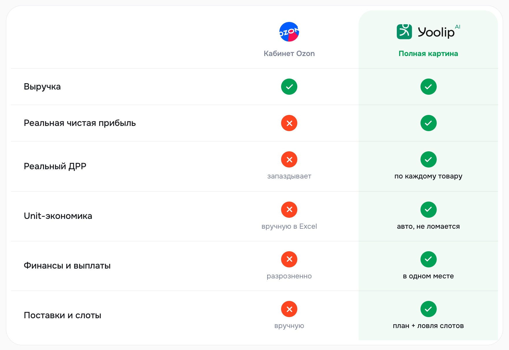
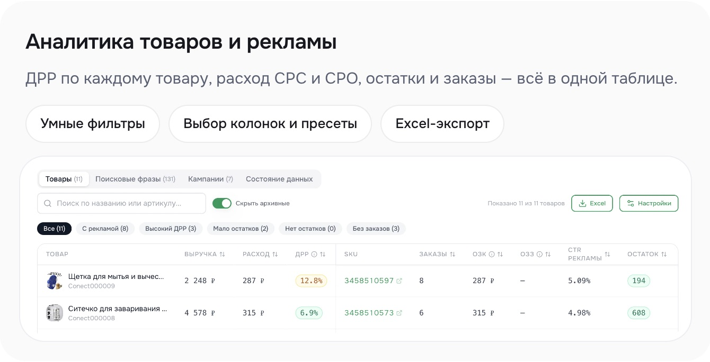
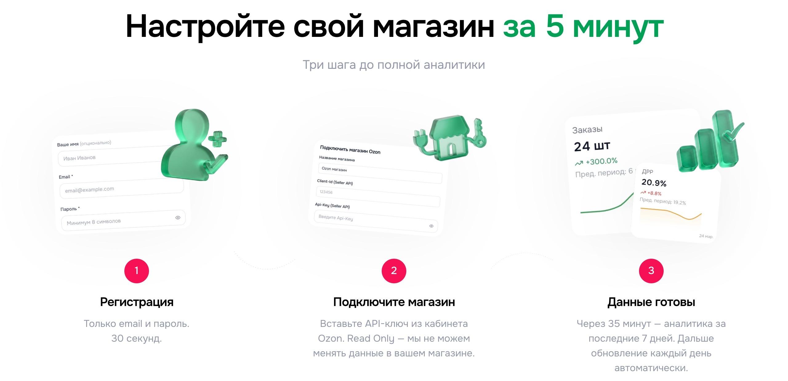

39 подключённых магазинов за 12 дней: 4 письма пользователям бесплатного расширения
Yoolip, аналитика для продавцов Ozon и Wildberries ·
email-маркетолог ·
2026 год
39 магазиновподключили пользователи бесплатного расширения за 12 дней
2,23%базы подключили магазин, 39 из 1 750 контактов
Каждый 3-йиз перешедших по ссылке в письме подключил магазин
37–42%открываемость каждого из четырёх писем
Данные: сервис рассылки и данные Yoolip о подключённых магазинах
Четыре письма за 12 дней. Столбик показывает долю получателей, перешедших на оффер: к четвёртому письму она выросла в полтора раза
Задача
Довести пользователей бесплатного расширения Yoolip до подключения магазина к сервису.
Yoolip считает для продавцов Ozon и Wildberries чистую прибыль по каждому товару, показывает расходы на рекламу, остатки, финансы и поставки. Бесплатное расширение для браузера показывает маржу прямо в карточке товара на Ozon. В базе было 1 750 пользователей расширения, которые так и не подключили магазин к сервису.
Подключённый магазин открывает селлеру главную ценность Yoolip: прибыль и расходы на рекламу по своим товарам на реальных данных. Пока магазин не подключён, человек видит только маржу отдельного товара в расширении.
Гипотеза: если перенести пользу расширения с одного товара на весь магазин и по очереди снять страхи «долго» и «небезопасно», пользователи расширения подключат магазин.
Построение системы
Зона ответственности охватывала весь канал: анализ продукта и аудитории, выбор сегмента, логику и тексты цепочки, отправку и разбор метрик. Цепочек было несколько. В кейсе разобрана одна, и все результаты посчитаны по ней.
Сегмент и задача
Логика цепочки
Письма
1Сегмент и задача клиента
Сегмент и задача
Логика цепочки
Письма
Сегмент: продавцы Ozon, которые пользуются только бесплатным расширением, 1 750 контактов.
Цепочка построена на Jobs to be Done. Селлеру нужно понять, на чём магазин реально зарабатывает. Расширение отвечает на этот вопрос для одного товара, подключённый магазин отвечает для всего ассортимента.
Маржа одного товара в расширении
→
Подключение магазина
→
Прибыль всего магазина
yoolip.ai
Отсюда начинается письмо 1: расширение показывает маржу прямо в карточке товара на Ozon
2Логика цепочки
Сегмент и задача
Логика цепочки
Письма
Первое письмо ничего не продаёт. Оно начинается с инструмента, которым человек уже пользуется, и переносит его пользу с одного товара на весь магазин.
Темы первых двух писем построены на страхе потери: потерянные деньги и переплата за рекламу. Такое письмо открывают, чтобы проверить свой магазин.
Третье письмо отвечает на два возражения, из-за которых подключение откладывают. На «долго» отвечают пять минут один раз, на «небезопасно» ключ только на чтение.
Самый сильный оффер стоит последним: полный доступ на 3 дня без привязки карты и 5 400 продавцов как социальное доказательство.
Письма подписывает основатель, который сам продаёт на Ozon. В каждом письме одна боль и одно действие.
ДеньТемаУголЧто предлагаем
0На каких товарах магазин теряет деньгиЧего не видит расширениеУвидеть прибыль по каждому товару
3Сколько вы переплачиваете за рекламу на OzonКуда уходит рекламный бюджетУвидеть расходы на рекламу по каждому товару
75 минут один раз, дальше всё считается самоПодключение проще, чем кажетсяПошаговая инструкция и видео
12Полный доступ к Yoolip на 3 дня бесплатноПодарок без рискаПодключить магазин и получить 3 дня
3Письма
Сегмент и задача
Логика цепочки
Письма
Ниже одна из цепочек. Её получила база из 1 750 пользователей расширения, все цифры кейса посчитаны по ней.
Письма даны как шаблон, подсвечено то, что подставлялось под получателя. Рядом показано, как тезисы писем выглядят в самом Yoolip.
Письмо 1 · прибыльНа каких товарах магазин теряет деньгиМаржа в карточке и прибыль магазина считаются по-разному
День 0
[Имя], добрый день.
Вы пользуетесь расширением Yoolip и видите маржу прямо в карточке Ozon. Чтобы выбрать товар или проверить цену, этого хватает.
А вот сколько магазин заработал на самом деле, расширение не покажет. Для этого нужны реальные комиссии, логистика, возвраты и реклама, а в кабинете Ozon видна в основном выручка.
Подключите магазин, и Yoolip посчитает чистую прибыль по каждому товару. Данные сервис берёт из вашего кабинета сам и обновляет каждый день, так что сводить цифры в Excel больше не придётся. В отчёте сразу видно, какие товары тянут магазин, а какие работают в ноль.
Подключить магазин бесплатно
Рома Райт, основатель Yoolip
P.S. Я сам продаю на Ozon и пользуюсь Yoolip каждый день в своём магазине.
yoolip.ai

Разница, на которой построено письмо 1: кабинет Ozon показывает выручку, Yoolip считает чистую прибыль и ДРР по каждому товару
Письмо 2 · рекламаСколько вы переплачиваете за рекламу на OzonОбщий ДРР может скрывать товары, которые тратят бюджет впустую
День 3
[Имя], ДРР в кабинете Ozon приходит с опозданием и не делит расходы на CPC и CPO. Поэтому общая цифра может выглядеть нормально, пока один-два товара тратят бюджет впустую.
В Yoolip ДРР видно по каждому товару, с разбивкой на CPC и CPO. Сервис сам находит, на чём реклама не окупается, и подсказывает, что поменять.

Посмотрите, куда уходят деньги на рекламу в вашем магазине:
Подключить магазин
Рома Райт, Yoolip
Письмо 3 · инструкция5 минут один раз, дальше всё считается самоКлюч только на чтение, данные появятся через 35 минут
День 7
[Имя], подключение магазина часто откладывают: кажется, что придётся разбираться с ключами и настройками, а времени на это всегда нет.
На деле это около пяти минут, и сделать их нужно один раз:
В кабинете Ozon откройте Настройки → API-ключи и создайте ключ.
В Yoolip откройте Настройки → Магазины Ozon → Добавить магазин и вставьте ключ.
Нажмите «Проверить» и «Сохранить».
Через 35 минут в Yoolip появится аналитика за последние 7 дней. Дальше данные обновляются сами, и к настройкам возвращаться не придётся.
Ключ создаётся с доступом только на чтение, поэтому изменить что-то в магазине Yoolip не может.
Если удобнее посмотреть на экране, в демо-видео подключение показано с 7-й по 9-ю минуту: [ссылка]
Подключить магазин
Рома Райт, Yoolip
yoolip.ai

Подключение в Yoolip: ключ Read Only, аналитика за 7 дней через 35 минут
Письмо 4 · подарокПолный доступ к Yoolip на 3 дня бесплатноБез привязки карты. При обороте до 100 000 ₽ основная аналитика бесплатна
День 12
[Имя], подключите магазин, и мы бесплатно откроем полную версию Yoolip на 3 дня. Карту привязывать не нужно.
За эти дни вы увидите на своих цифрах, какие товары приносят прибыль и сколько уходит на рекламу.
Если оборот магазина за 30 дней меньше 100 000 ₽, основная аналитика в Yoolip бесплатна и дальше, на тарифе «Старт».
Yoolip уже пользуются больше 5 400 продавцов на Ozon. Расширение при этом остаётся бесплатным.
Подключить магазин и открыть полный доступ
Рома Райт, Yoolip
Результат
За 12 дней 39 пользователей бесплатного расширения подключили магазин. Все 39 подключений новые: до рассылки этот сегмент магазин не подключал. Гипотеза подтвердилась.
ДеньТемаОткрываемостьПерешли на оффер
0На каких товарах магазин теряет деньги42%2,0%
3Сколько вы переплачиваете за рекламу на Ozon39%1,8%
75 минут один раз, дальше всё считается само37%2,5%
12Полный доступ к Yoolip на 3 дня бесплатно40%3,0%
Доля перешедших на оффер посчитана от всех получателей письма, включая тех, кто его не открыл.
1 750контактов получили цепочку
≈120уникальных пользователей перешли по ссылкам, 6,9% базы
39подключили магазин, 2,23% базы
Открываемость держалась на 37–42% все 12 дней: каждое письмо открывала больше трети получателей.
К четвёртому письму доля переходов выросла в полтора раза, с 2,0% до 3,0%. Из тех, кто открыл письмо 4, на оффер перешли 7,5%.
Четыре письма собрали ≈163 клика. Один человек мог кликнуть в нескольких письмах, а магазин подключают один раз, поэтому итог посчитан по ≈120 уникальным пользователям.
39 из них подключили магазин: каждый третий из перешедших по ссылке (32,5%) и 2,23% всей базы.
Данные: сервис рассылки и данные Yoolip о подключённых магазинах
Почему это сработало
Знакомый инструмент как точка входа
Письмо 1 начинается с расширения, которым получатель уже пользуется, и переводит разговор на прибыль всего магазина. Подключение читается как продолжение того, что у человека уже работает.
Страх потери в темах
Письма про потерянные деньги и переплату за рекламу открыли 42% и 39% получателей. В такой теме селлер видит риск для своего магазина и открывает письмо, чтобы себя проверить.
Клик принесли письма, которые сняли возражения
Пользователи расширения понимали, зачем подключать магазин, и откладывали его из-за «долго» и «небезопасно». Письмо 3 закрыло оба возражения: пять минут один раз, ключ только на чтение. Письмо 4 убрало риск заплатить, дав 3 дня полного доступа без карты. У этих писем самая высокая доля переходов, 2,5% и 3,0%.
Помогла тёплая база: получатели уже знали Yoolip по расширению. Цепочка довела это знакомство до подключения: перенесла пользу расширения на весь магазин и по очереди сняла возражения, из-за которых его откладывали.